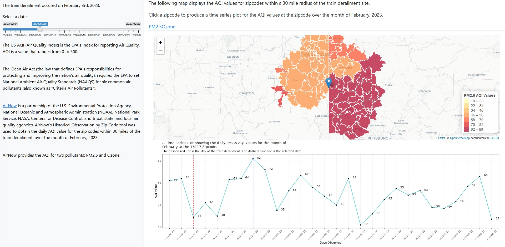
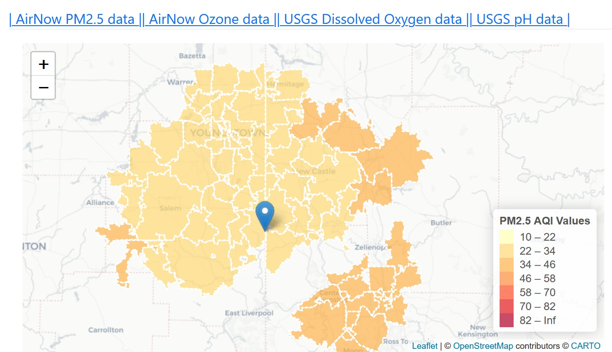
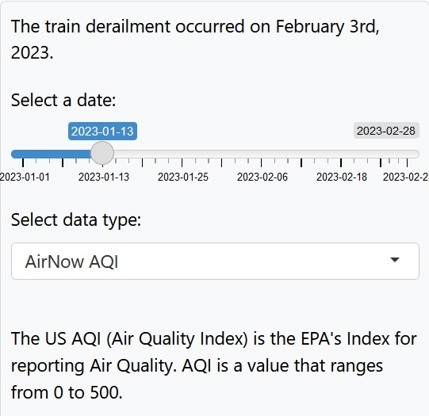
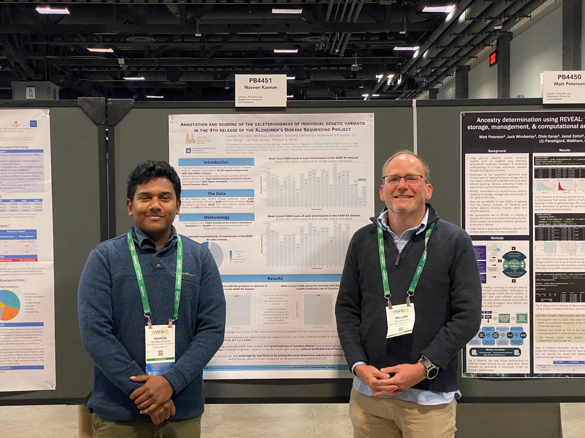

| Table 1. Baseline characteristics of 864 individuals with a diagnosis of hypertension, receiving primary care at Highland and Sycamore practices. | |||
| Data taken from a simulated dataset. | |||
| Characteristics | Highland | Sycamore | p |
|---|---|---|---|
| Demographic Characteristics | |||
| no.1 | 432 | 432 | |
| Age - Years(Median, [IQR])2 | 55.0 [47.8, 63.0] | 64.5 [56.0, 73.0] | <0.001 |
| Race - no.(%)3,1 | <0.001 | ||
| White | 367 (85.0) | 53 (13.2) | |
| AA_Black | 52 (12.0) | 335 (83.5) | |
| Asian | 12 (2.8) | 3 (0.7) | |
| Other | 1 (0.2) | 10 (2.5) | |
| Hispanic/Latino Ethnicity - no. (%)3,1 | 93 (21.5) | 0 (0.0) | <0.001 |
| Male sex - no. (%)1 | 178 (41.2) | 148 (34.3) | 0.042 |
| Insurance Provider - no. (%)1 | <0.001 | ||
| Medicaid | 161 (37.3) | 0 (0.0) | |
| Medicare | 137 (31.7) | 192 (44.4) | |
| Commercial | 74 (17.1) | 240 (55.6) | |
| Uninsured | 60 (13.9) | 0 (0.0) | |
| Health Characteristics | |||
| Body Mass Index - kg/m^2(Median, [IQR])3,4,2 | 31.9 [27.3, 37.7] | 30.7 [26.8, 36.4] | 0.064 |
| BMI Category - no. (%)3,1 | 0.234 | ||
| Underweight | 4 (0.9) | 2 (0.5) | |
| Healthy Weight | 53 (12.5) | 69 (16.0) | |
| Overweight | 103 (24.2) | 116 (26.9) | |
| Obese | 265 (62.4) | 245 (56.7) | |
| Systolic Blood Pressure - mm/Hg(Median, [IQR])2,5 | 130.5 [118.8, 142.2] | 130.0 [120.0, 138.0] | 0.373 |
| Diastolic Blood Pressure - mm/Hg(Median, [IQR])2,5 | 79.0 [72.0, 84.0] | 74.0 [67.0, 81.0] | <0.001 |
| 1 Numbers are No. (%) unless otherwise noted. | |||
| 2 IQR = Interquantile Range. | |||
| 3 These variables are missing no more than 4% of their values. | |||
| 4 kg/m^2 = Kilograms per square Meter. | |||
| 5 mm/Hg = Millimeters of mercury. | |||
Geospatial Analytics
Mapping the Environmental Impact of the 2023 Norfolk Southern Train Derailment in East Palestine, Ohio
This dashboard maps the environmental impact of the 2023 Norfolk Southern train derailment in East Palestine, Ohio on the states of Ohio, West Virginia and Pennsylvania across a two month period.
This project was coded entirely by me, with the interactive dashboard built in R using Shiny apps, and geo-visualization performed using GIS programming with Python and R.
Data for the project was obtained by coding scripts that scraped the internet for government created, publicly available datasets. Primarily, data was obtained from the USGS (United States Geological Survey) and AirNow.
Shiny Widgets and Dashboard are dynamic, so I cannot directly render the dashboard here. However, it’s easily available at the above link!

A screencap of the dashboard. It allows for visualization of a choropleth map for the zipcodes within a 30 mile buffer zone around the train derailment site in East Palestine, Ohio. It allows for visualization of the trend of the changes in AQI values across the months of January and February, 2023.

This part of the dashboard is a choropleth map that displays the air quality indices of the counties within a 30 mile buffer zone around the derailment site.
This map is interactive. When a county is clicked, it displays the air quality trend for the county across the study period, with indicators showing the selected date and the date of the derailment, in the form of a time series plot.

The dashboard has a date slider, allowing for visualization of the choropleth map and it’s accompanying time series plot on the selected date.

This dashboard was built as part of the final project for PQHS 427 at Case Western Reserve University, Department of Population Health and Quantitative Health Sciences.
Find the GitHub Repo here. This includes the datasets I used.
ArcGIS and QGIS
The following maps have been made using ArcGIS and open source applications such as QGIS.


Python and Geospatial Analytics
I worked with the GIS Health and Hazards Lab in the Department of Population and Quantitative Health Sciences to work on mapping refugee camp sites in the Democratic Republic of Congo following the eruption of Mount Nyiragongo on Saturday, May 2021.
I created Python scripts for a multitude of tasks, including object detection and video frame parsing. These Python scripts can be found on my Github page, at the following link:
https://github.com/naveenk2022/GIS-repository
The paper containing a detailed description of the work done is currently being worked on, and I will share details and images when that happens!
Data Analysis and Visualization
The following projects (mostly done on Public Health associated datasets) involve:
Statistical analysis of data.
Visualization of variable distribution and outcomes.
Interpretation and presentation of the findings.
An analysis of the Population Assessment of Tobacco and Health (PATH) Study.
The Population Assessment of Tobacco and Health (PATH) Study began originally surveying 45,971 adult and youth respondents. The study sampled over 150,000 mailing addresses across the United States to create a national sample of tobacco users and non-users, and is a collaboration between the National Institute on Drug Abuse (NIDA), National Institutes of Health (NIH), and the Center for Tobacco Products (CTP), Food and Drug Administration (FDA).
This project looks at predicting e-cigarette use among adults in the United States.
I asked, and answered, the following questions:
E-Cigarette Perception, Smoking Habits, and their association with Heavy E-Cigarette Use:
Are smoking e-cigarettes that contain nicotine, the perception of the purported healthiness of e-cigarettes when compared to smoking regular cigarettes, and smoking habits strong predictors of heavy e-cigarette use in adulthood?
Regular e-cigarette use and it’s associated factors:
Are factors such as using flavored e-cigarettes, or needing to use e-cigarettes immediately after waking up, or using e-cigarettes with nicotine, or use of e-cigarettes as a healthier alternative to regular cigarettes associated with regular e-cigarette use?
NHANES (National Health and Nutrition Examination Survey)
The National Health and Nutrition Examination Survey (NHANES) is a program of studies designed to assess the health and nutritional status of adults and children in the United States. The survey is unique in that it combines interviews and physical examinations. NHANES is a major program of the National Center for Health Statistics (NCHS). NCHS is part of the Centers for Disease Control and Prevention (CDC) and has the responsibility for producing vital and health statistics for the Nation.
This projectAnalysing the relationship between Blood Cholesterol levels, Physical Activity, Excessive Drinking and Depression, and can be found here.
I asked and answering the following question:
Among adults of ages 21-79 participating in NHANES 2017-18, is there a significant difference in the values of HDL cholesterol values of participants across their self-reported participation or lack thereof in vigorous weekly physical activity?
Scooby-Doo analytics
“Scooby-Doo” is a television series that has been airing for over 50 years. Centered around Mystery Inc.,a group of iconic mystery solving detectives, including Fred, Daphne, Velma, Shaggy, and the titular Scooby-Doo, a talking dog with a penchant for consuming ridiculously tall sandwiches and Scooby snacks.
The data comes from Kaggle, and was part of Tidy Tuesday’s dataset for 2021-07-13, and can be found here.
I decided to use a more light-hearted dataset for this. However, I did perform thorough analysis of the data I had!
I asked, and answered, the following questions:
Predicting an iconic catchphrase: Are the logistics of an episode of Scooby-Doo good predictors of the number of times an iconic catchphrase is spoken?
Monster Motivation: Is it possible to predict the motive of the major antagonist of an episode of Scooby-Doo, based on the nature of the monster the antagonist appears as?

Creating a Publication-Ready Table 1
The following table was created from a simulated dataset containing data on individuals with a hypertension diagnosis, receiving primary care at two primary health practices.
Presentations
IHPBA (International Hepato-Pancreato Biliary Association) 2016
I presented my paper(Kannan, N., Vellaisamy, R., Govindarajan, M., & Gounder, K. D. (2016). Pellagra following pancreaticoduodenectomy for malignant pancreatic carcinoid with pluripotent hormonal potential. HPB, 18, e381-e382.) at IHPBA’s 12th World Congress at Sao Paulo, Brazil.
ASHG (American Society of Human Genetics) 2023
Annotation and scoring of the deleteriousness of individual genetic variants in the 4th release of the Alzheimer’s Disease Sequencing Project. (PB4451)
Naveen Kannan1, Nicholas Wheeler1, Genome Center for Alzheimer’s Disease, Li-San Wang2, Yuk Yee Leung2, William S. Bush1
- Cleveland Institute for Computational Biology, Department for Population and Quantitative Health Sciences, Case Western Reserve University, Cleveland, Ohio 44106, USA.
- Department of Pathology and Laboratory Medicine, Penn Neurodegeneration Genomics Center, Perelman School of Medicine, University of Pennsylvania, Philadelphia, Pennsylvania 19104, USA.
Presented at the Annual Meeting of The American Society of Human Genetics, November 3, 2023 in Washington DC.
